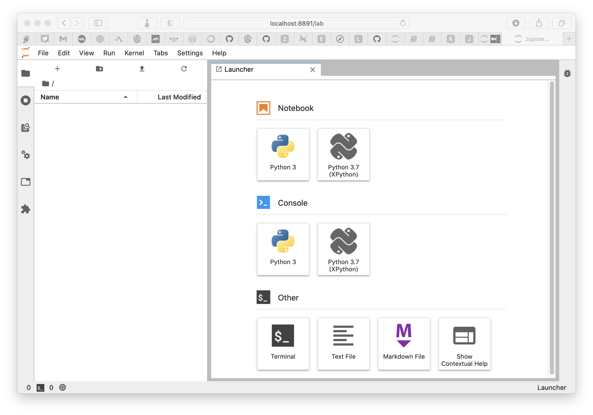
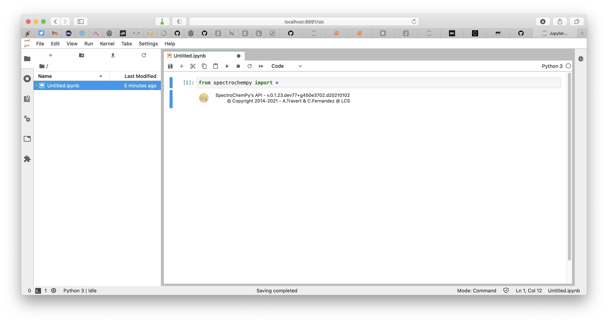
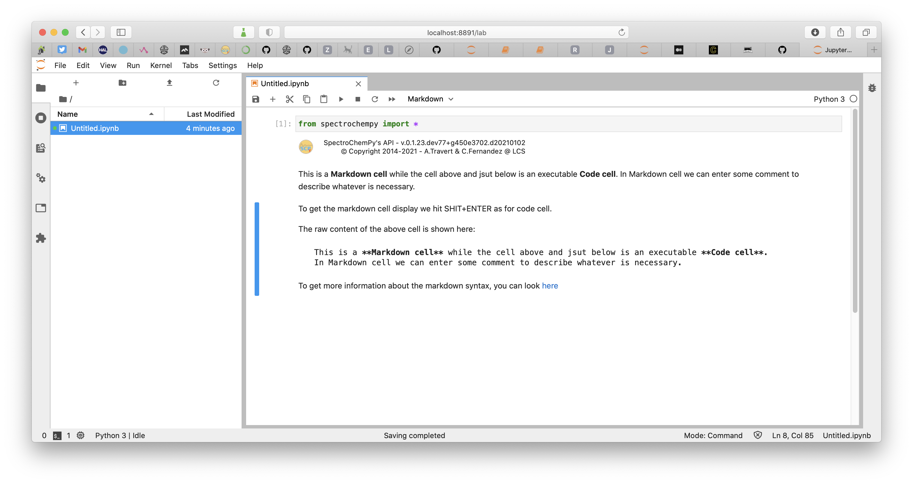

Starting Jupyter lab¶
Currently, SpectroChemPy can be used as a library for python scripts.
For ease of use, we recommend using the JupyterLab application or for those who are more comfortable programming, writing python scripts in a development environment such as PyCharm, VS Code or Spyder.
To launch Jupyter Lab, open a terminal and follow the steps below:
Go to your favorite user document folder (e.g.,
$HOME/workspaceor any other folder you want to use to store your work).
$ cd $HOME/workspace
Then type the following command:
$ jupyter lab
Your default browser should now be open, and the window should look like this:

From there, it is quite easy to create notebooks or to navigate to already existing ones.
Create a new Jupyter notebook¶
Click on the Notebook python 3 icon
A new notebook is created
Enter your first command, in the displayed cell, and type
SHIFT+ENTERto run the code
from spectrochempy import *
You can rename the notebook using context menu in the sidebar

Then you can click on the
+sign to create a new cell. This cell is by default a Code cell which can contain Python code, but you can also enter some text, in Markdown format. Choose the content type of the cell in the dropdown menu, or by typingESC+M. 
Markdown cheat sheet¶
To get more information on Markdown format, you can look here.
Using the application in a web browser¶
In Progress
For the moment we don’t yet have a graphical interface to offer other than Jupyter notebooks or python scripts. It is in any case our preferred way of working with SpectroChemPy because it offers all the necessary flexibility for a fast and above all reproducible realization of the different tasks to be performed on spectroscopic data.
However, we have started to create a simple interface using Dash which will allow in a future version to work perhaps more simply for those who do not have the time or the will to learn to master the rudiments of python or who do not wish to program.
[ ]: